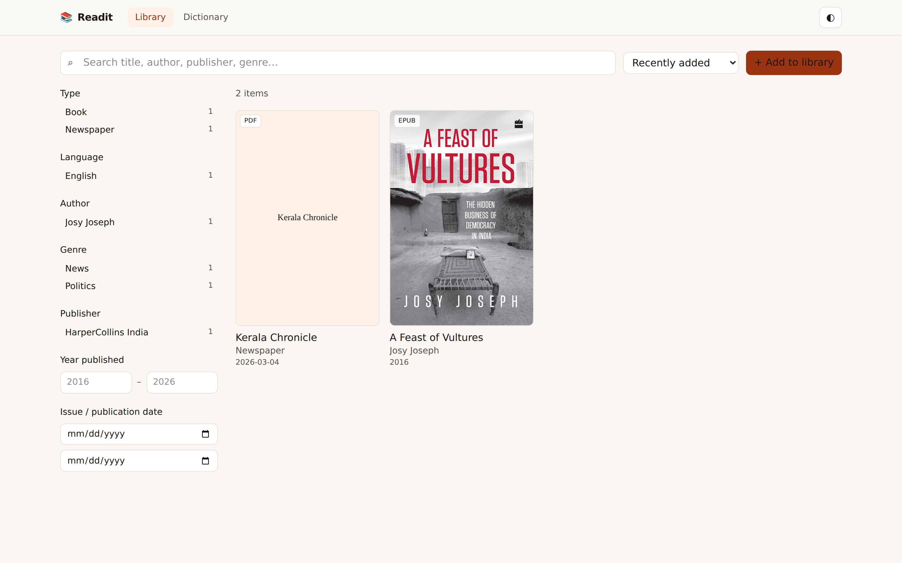
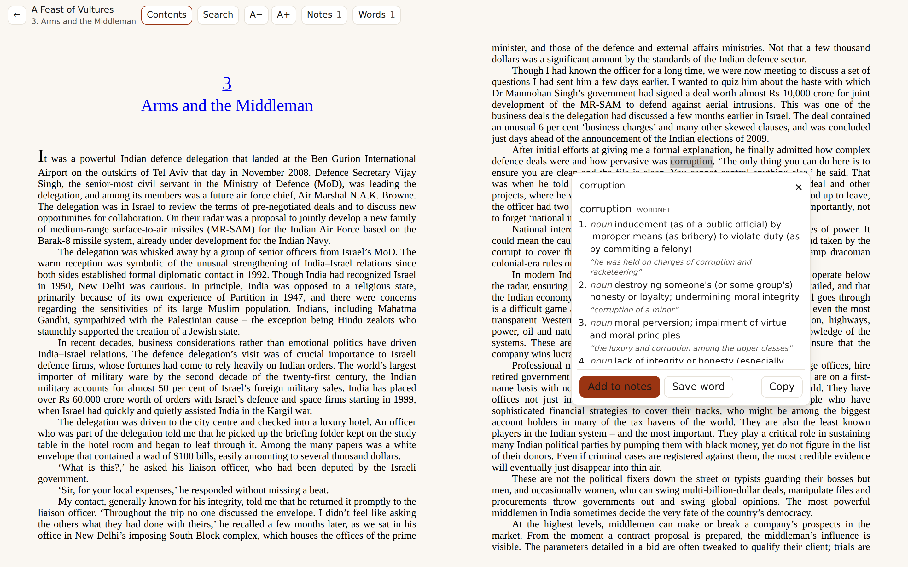
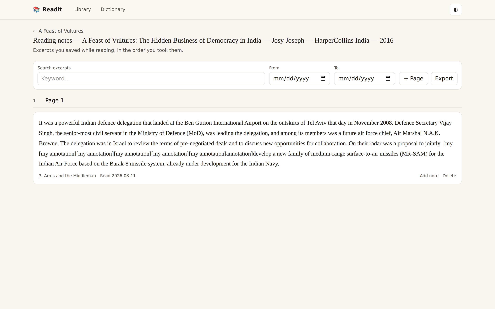
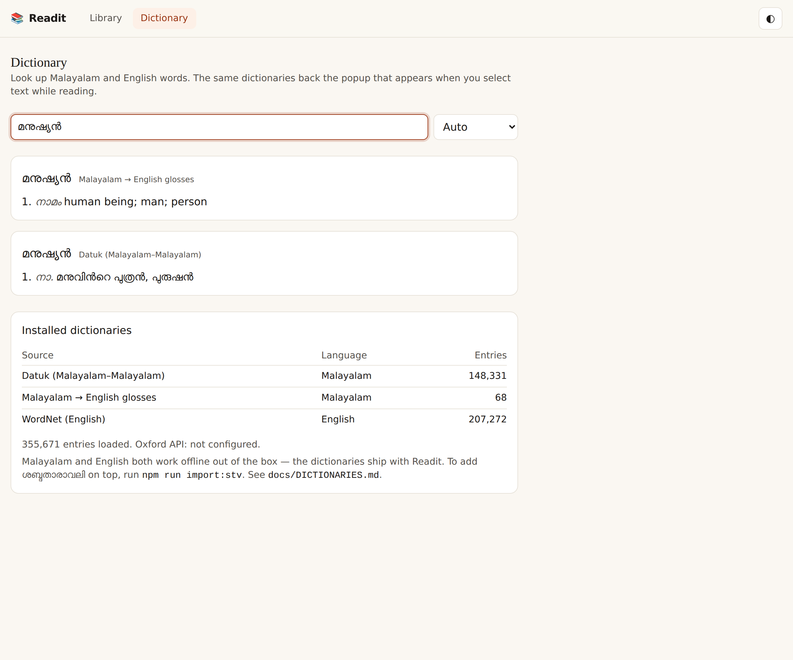

One searchable library for your books, magazines, newspapers and PDFs — with a reader that turns any selection into a dictionary lookup or a note.
Import EPUB and PDF. Readit reads the title, authors, language, publisher, date, ISBN and cover out of the file, then lets you correct anything and add edition, genres and issue details.
Filter by type, language, author, genre, publisher, series, year and issue date, with live counts. Search inside a book and jump to the passage.
EPUBs paginate with a table of contents; PDFs render with a real text layer, so the text is genuinely selectable rather than a picture of words.
Select a word and its meanings appear — Malayalam and English, no connection and no API key. Inflections resolve to the headword.
Excerpts and looked-up words, each notebook named with the particulars of its source, paginated like a book, editable, and searchable by keyword and date.
A magazine or newspaper gets a separate notebook page per issue date, so a title you follow over months reads chronologically.




Both ship with the application and load themselves the first time it starts. Nothing is downloaded and nothing needs configuring.
| Language | Dictionary | Contents | Licence |
|---|---|---|---|
| Malayalam | Datuk | 148,331 definitions for 83,610 words | ODbL |
| English | WordNet 3.1 | 207,272 senses with examples | WordNet |
This page is static — it is a description of Readit, not the app. Readit stores your library on disk and needs a server, so it runs on your own machine or on a host you control. Your books and notes stay yours.
git clone https://github.com/robinfrancis186/readit.git
cd readit
npm install
npm run build
npm start # http://localhost:4000docker build -t readit .
docker run -p 4000:4000 -v readit-data:/data \
-e READIT_PASSWORD='a long passphrase' readitTo reach it from your phone, or to put it on a host, set a password — Readit has no accounts and anyone who can reach the port can otherwise read and delete your library. Deployment configs for Fly.io and Render are in the repository, and docs/DEPLOY.md walks through it.
Once it is running you can install it as an app — Chrome or Edge on desktop, Chrome on Android, or Share → Add to Home Screen on iOS.